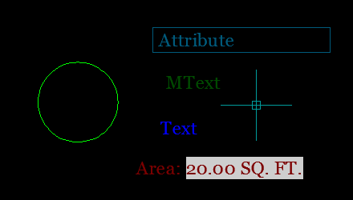

Copy Field
This page is delivered for consistency purposes only, as part of the LeeMac sample module of DynALisp, which shows how DynALisp turns existing AutoLISP programs into a module. The program and its description are the work of Lee Mac, who keeps all the credit for them. The original page, with the latest version, is on Lee Mac's website: https://lee-mac.com/copyfield.html
| Function Syntax | LM-CopyField – original syntax: copyfield (see aliases) |
| Current Version | 1.1 |
| Compatible with AutoCAD for Mac? | No |
| Compatible with AutoCAD LT? | Yes |
| Original Page | lee-mac.com/copyfield.html |
Program Description
This program enables the user to copy a field expression from a selected source object to multiple destination objects in a drawing.
Upon issuing the command syntax copyfield at the AutoCAD command-line, the user is prompted to select an annotation object (Text, MText, Attribute, Multileader, Dimension) containing a field expression to be copied.
Following a valid response, the user may then copy the field to multiple selected destination objects in the drawing, whose content will then be replaced by the field expression and any associated content from the source object.
This program utilises my Field Code function to extract the field expression associated with a selected object and is hence also compatible with nested field expressions (nested to any depth).
Demonstration

Bundled program notes
;;--------------------------=={ Copy Field }==--------------------------;;
;; ;;
;; This program enables the user to copy a field expression from a ;;
;; selected source object to multiple destination objects in a ;;
;; drawing. ;;
;; ;;
;; Upon issuing the command syntax 'copyfield' at the AutoCAD ;;
;; command-line, the user is prompted to select an annotation object ;;
;; (Text, MText, Attribute, Multileader, Dimension) containing a ;;
;; field expression to be copied. ;;
;; ;;
;; Following a valid response, the user may then copy the field to ;;
;; multiple selected destination objects in the drawing. ;;
;;----------------------------------------------------------------------;;
;; Author: Lee Mac, Copyright © 2013 - www.lee-mac.com ;;
;;----------------------------------------------------------------------;;
;; Version 1.0 - 2013-07-14 ;;
;; ;;
;; - First release. ;;
;;----------------------------------------------------------------------;;
;; Version 1.1 - 2017-06-13 ;;
;; ;;
;; - Updated LM:fieldcode function to account for field expressions ;;
;; greater than 250 characters in length. ;;
;;----------------------------------------------------------------------;;
Command Names And Aliases
As in every DynALisp module, each program of this sample module has one main command, named LM-*, and the original command names of Lee Mac's page are kept as its aliases: they run the same command, and can be added, renamed or removed in Dyl-Suite (saved in Resources\Aliases.csv).
| Command | Aliases | Name |
|---|---|---|
| LM-CopyField | COPYFIELD | Copy Field |